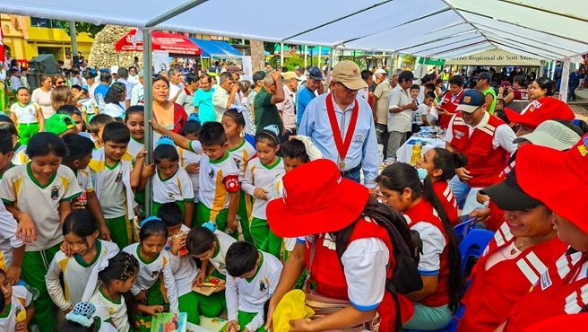

CSJ SAN MARTÍNPanel de noticias
ADMINISTRACIÓN EDITORIAL
Panel de gestión.
i
Guardado en la base de datos: las publicaciones y cuentas se guardan en MySQL y se ven en el portal para todos los visitantes.
Mi cuenta · cambiar contraseña
Contraseña actualizada.